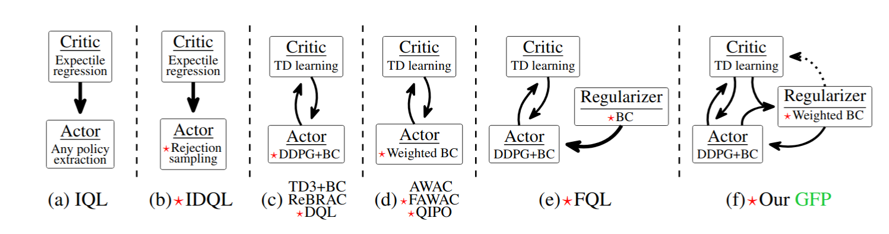
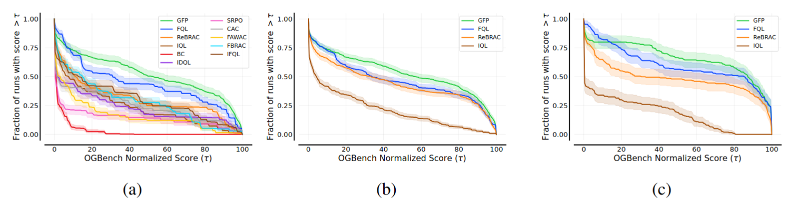

Abstract
Offline reinforcement learning often relies on behavior regularization that enforces policies to remain
close to the dataset distribution.
However, such approaches fail to distinguish between high-value and low-value actions in their
regularization components.
We introduce Guided Flow Policy (GFP), which couples a multi-step flow-matching policy with a distilled
one-step actor.
The actor directs the flow policy through weighted behavior cloning to focus on cloning high-value actions
from the dataset rather than indiscriminately imitating all state-action pairs.
In turn, the flow policy constrains the actor to remain aligned with the dataset's best transitions while
maximizing the critic.
This mutual guidance enables GFP to achieve state-of-the-art performance across 144 state and pixel-based
tasks from the OGBench, Minari, and D4RL benchmarks, with substantial gains on suboptimal datasets and
challenging tasks.
Offline Reinforcement Learning

Overview of GFP

GFP consists of three main components: (i) in yellow, VaBC, a multi-step flow policy trained via weighted BC
using the guidance term, (ii) in green, a one-step actor distilled from the flow policy, and (iii) in gray,
a critic guiding action evaluation. VaBC regularizes the actor toward high-value actions from the dataset;
in turn, the actor shapes the flow and optimizes the critic following the actor-critic approach.
The different components of the figure are introduced in the paper.
Each drawing represents the probability distribution of actions of a policy, in a current state s, except
for the gray ones, where it is the value of actions in state s, according to the critic.
Experiments across 144 tasks

(a) Performance profiles for 50 tasks comparing GFP against a wide range of prior works, showing the
fraction of tasks where each algorithm achieves a score above threshold tau. (b) Performance profiles on 105
tasks, including more challenging ones, and carefully reevaluated prior methods. (c) Performance profiles
restricted to 30 noisy and explore tasks.